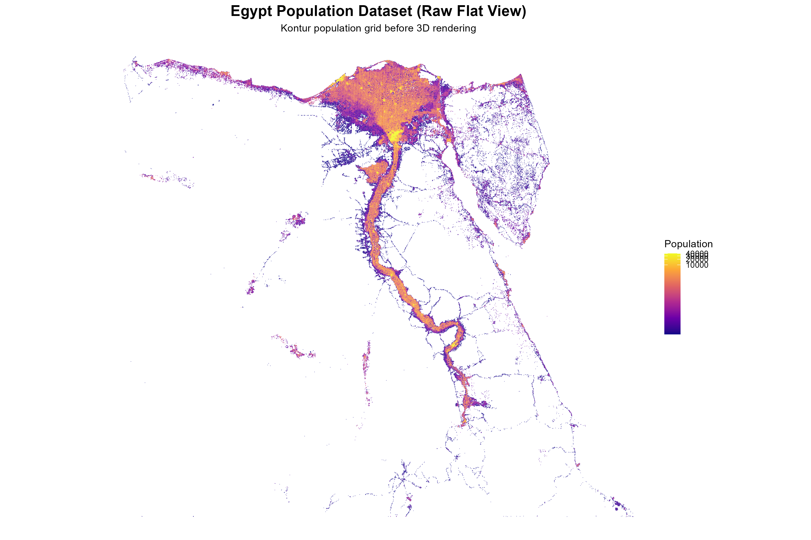
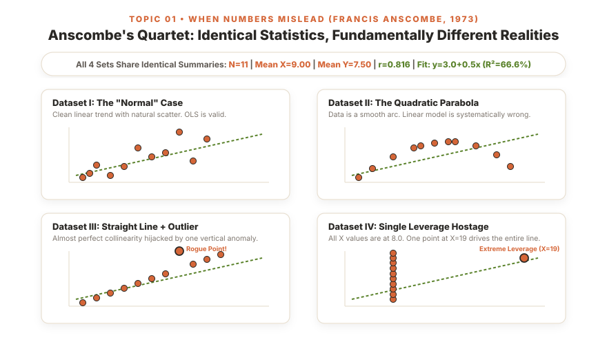

The
Philosophy
of
Looking:
How
Topic
01
Cured
My
Dataset-Hopping
Panic

Before DS311, I rushed straight into models and abandoned messy datasets out of panic. Then Ma'am Chris walked us through John Tukey and Francis Anscombe in Topic 01 — teaching me that data must be seen, not just calculated, and why the messy surprises are where the real story lives.
Let me share an honest confession about how I used to approach data science before entering DS311: I was doing almost everything completely backward.
Whenever our professors gave us an analytical assignment, my immediate instinct was to formulate a conclusion in my head first, load the dataset, and rush to ask: “Does this confirm what I want to prove?” I would skip the foundational legwork and jump straight into multivariate scatter plots, high-dimensional projections, and correlation heatmaps without spending even five minutes inspecting what the individual columns actually contained.
I didn't pay attention to whether a feature had a severe right skew, whether the variance was dominated by a couple of massive outliers, or what the units of measurement even meant. To me, a dataset was just a monolithic block of numbers that I wanted to shove into an algorithm as fast as possible.
Inevitably, reality would push back hard. I would find a column with 30% null values. A variable would have negative values where only positive numbers made sense. Or a correlation coefficient would read as a weak r = 0.12 when I was convinced a massive relationship existed.
And whenever I hit those roadblocks, I panicked. I had memorized textbook terms like “mean imputation,” “median imputation,” and “forward fill,” but in practice, I had little to no idea which imputation I should actually choose or what damage it would cause. I treated missing values like an annoying bug to be erased — blindly writing df.fillna(df.mean()) just to stop my code from crashing. When the resulting models fell apart, I fell into chronic dataset-hopping.
During our 2nd-year DATAVIS course, my group and I hit this wall repeatedly. We would spend hours scouting Kaggle for datasets with exciting titles, load them into Google Colab, encounter missing values and bizarre percentages, enter a cold sweat at 1:30 AM, and abandon the project to hunt for something easier. We hopped through multiple dead ends until we finally stumbled upon the Egypt Population Density dataset.
Unlike the chaotic datasets that had triggered our panic, the Egypt dataset wasn't really a problem. It provided coherent, structured records of Egypt's governorates, total populations, and inhabited land areas. Stumbling upon it felt like striking gold: it finally gave us a reliable foundation to map the dramatic demographic contrast between the hyper-dense Nile Valley corridor and the vast, sparsely populated desert frontier governorates.


In DATAVIS, I got lucky by hopping around until I found a dataset that didn't scare me. But in DS311 Lab 01 (Water Potability), auditing 3,276 aquatic samples across pH, Sulfate, and Trihalomethanes showed that missing values were selective laboratory test omissions because rural stations lacked chromatography equipment. If I had blindly imputed the mean, I would have fabricated false safety profiles and poisoned the analysis!
In our first week of DS311, Ma'am Chris introduced us to Anscombe's Quartet — four synthetic datasets published in The American Statistician in 1973 to demolish the false assumption that numerical summaries alone tell the whole story.
| Metric | Dataset I | Dataset II | Dataset III | Dataset IV |
|---|---|---|---|---|
| Mean of X | 9.00 | 9.00 | 9.00 | 9.00 |
| Mean of Y | 7.50 | 7.50 | 7.50 | 7.50 |
| Variance of X | 11.00 | 11.00 | 11.00 | 11.00 |
| Variance of Y | 4.125 | 4.125 | 4.125 | 4.125 |
| Pearson Correlation (r) | 0.816 | 0.816 | 0.816 | 0.816 |
| Linear Fit & R² | y = 3.0 + 0.5x (66.6%) | y = 3.0 + 0.5x (66.6%) | y = 3.0 + 0.5x (66.6%) | y = 3.0 + 0.5x (66.6%) |

Clean linear relationship with natural scatter. The only dataset where Ordinary Least Squares (OLS) is genuine and honest.
A smooth curved trajectory where fitting a straight line is systematically wrong, yet invisible without plotting.
A strict collinear line whose regression statistics are completely hijacked by a single vertical rogue point.
Ten points stacked at x=8.0; the entire slope, correlation, and line are held hostage by one leverage point at x=19.0.
Instead of asking, “Does this confirm my hypothesis?”, John Tukey taught us that EDA asks, “What is this data trying to tell me?” These Four R's are my personal data science compass:
Click anywhere on the radar canvas to drop coordinate points or toggle classic presets
Notice what happens when you switch between the presets: Even when the summary statistics match (r ≈ 0.816, β1 ≈ 0.500, R2 ≈ 66.6%), the physical story on the canvas changes completely. In Anscombe IV (Leverage), click and drop points near the left cluster — see how stubbornly the regression line stays anchored to that single lonely dot on the right! That is influence in action.
In traditional mathematics, I was conditioned to follow rigid, step-by-step formulas: plug in numbers, calculate the result, get the single right answer. In Topic 01, Ma'am Chris taught us that EDA is not governed by a universal checklist — it is an iterative cycle shaped by the data itself:
In earlier DATAVIS projects, I used to ignore where data came from entirely — I would just download a CSV from Kaggle and immediately start typing code. When working on our CDO Health Access project, I learned that knowing whether healthcare clinic coordinates came from OpenStreetMap volunteers versus official DOH or CBMS censuses determined what the records truly meant before writing a single line of code. Data never exists in a vacuum.
Grounding in Origin
My old bad habit was jumping straight into plotting charts without checking the data's skeleton first. I would run into bizarre syntax crashes halfway through simply because a numeric column was formatted as an object string, or because the dataset had thousands of hidden duplicate rows. Now, the moment I load any dataframe into Jupyter, my mandatory first reflex is running df.shape and df.info().
This was my biggest wake-up call during our Lab 01 Water Potability activity and our Diabetes 130-US Hospitals dataset. In 2nd year, I treated missing values like a nuisance to be wiped with fillna(mean). But when auditing 3,276 water samples, I discovered that missing Sulfate and Trihalomethanes readings were selective laboratory omissions because rural stations lacked chromatography equipment. And in the diabetes data, weight was missing in 97% of patient records!
Before Ma'am Chris taught us Topic 01 and Topic 05, I completely ignored single variables — I wanted multi-variable interactions right away. But when I audited the Egypt Population Density dataset, looking at population density without inspecting the distribution squashed everything flat against zero because Cairo and Giza were massive outliers. Now, I audit every column individually first: comparing median against mean to spot skewness and leverage.
Spotting Heavy TailsWhen I reached Lab 04 (NYC Yellow Taxi Trips) and paired trip distance with fare amount, bivariate inspection became real. A single scalar like Pearson's r would have tricked me into believing a simple linear trend existed, but plotting the scatter revealed flat-rate airport trips where 0 miles cost $50, and GPS glitches where 150 miles cost $10! In our CDO Health Access research, examining travel times against vulnerability revealed spatial divides no single variable could show.
Lenses, Not LocksThis is the core orientation Ma'am Chris instilled in me. Instead of passively writing code, I constantly ask: “Does this number make physical sense in the real world? If not, why?” When I saw 0-mile taxi trips with $50 fares in Lab 04, or rural barangays with zero primary health facilities in our CDO spatial study, those weren't errors to throw away — they were the real story!
The Genuine StoryI used to think that the goal of data analysis was to finish with an undisputed, final answer on day one. But as Ma'am Chris reminded us, EDA doesn't give you final answers — it gives you better, sharper questions. When I finish exploring a dataset now, I walk away with informed, testable hypotheses: “Why do upland barangays show acute travel-time impedance?” or “Does patient readmission spike when HbA1c isn't tested during inpatient admission?”
Curiosity into ScienceThe lessons from Topic 01 form the foundation of how I approach every machine learning and data science project in my degree: